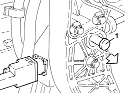
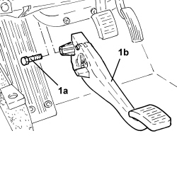

3330B26 CLUTCH PEDAL - R+R
- Path
- Procedures > 33 BRAKES > 3330 HYDRAULIC BRAKING SYSTEM > 3330B PEDAL UNIT > 3330B26 CLUTCH PEDAL - R+R
- Kind
- repair procedure (removal / refitting; the operation number is the code)
- Applies to
- all engines; all production periods
- Interactive page
- https://sloeber94.github.io/elrnDB-aBrrSpdr/en/#/946002130
Applies to: all engines; all production periods
 Removing
Removing
 Refitting
RefittingOp. 7040A37 FUSE BOX COVER IN INSTRUMENT PANEL - R.R
Op. 5505A43 CONTROL UNIT (DIGITAL NETWORK NODE) IN DRIVER'S DOOR - R.R. WITH PANEL REMOVED
- Turn the clutch pedal switch through 90° and release from its mount.
1. Withdraw the pin connectng the clutch pump to the pedal.

Applies to: all engines; all production periods
1. Undo the bolt (1a) and remove clutch pedal (2b).

Applies to: all engines; all production periods
Refitting
Removing- Place the brake pedal in position and secure it tightening the bolts to the recommended torque.
Component | Fastening | dia | Value (daNm) | Validity |
|---|---|---|---|---|
Clutch pedal | Bolt | M | (pedal assembly side) |
- Refit a new pin to connect the clutch pump to the pedal.
- Place the clutch pedal switch in its housing on the mount.
Op. 5505A43 CONTROL UNIT (DIGITAL NETWORK NODE) IN DRIVER'S DOOR - R.R. WITH PANEL REMOVED
Topics linked from this page (2)
- 5505A43 CONTROL UNIT (DIGITAL NETWORK NODE) IN DRIVER'S DOOR - R.R. WITH PANEL REMOVED
- 7040A37 FUSE BOX COVER IN INSTRUMENT PANEL - R.R